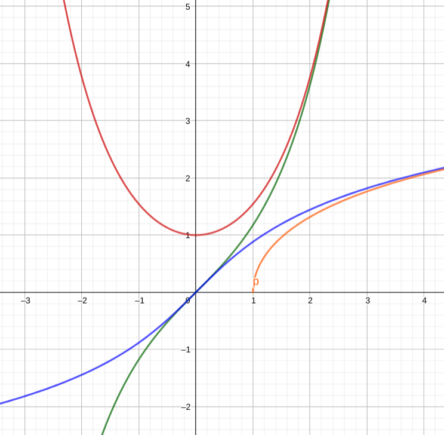

定义
sinhx=2ex−e−x
coshx=2ex+e−x
考虑复变函数cosx和sinx沿着虚轴切开。由此可以理解一些性质
求导和积分
(sinhx)′=coshx
(coshx)′=sinhx
∫sinhx=coshx+C
∫coshx=sinhx+C
反函数
推导，设y=sinhx，那么
⇔⇔⇒⇒y=2ex−e−x 2yex=e2x−1 e2x−2yex−1=0 ex=22y+4y2+4=y+y2+1 x=ln(y2+1+y)
如果设y=coshx，那么
⇔⇔⇒⇒y=2ex+e−x 2yex=e2x+1 e2x−2yex+1=0 ex=22y+4y2−4=y+y2−1 x=ln(y2−1+y)
得到反函数的表达式
sinh−1x=ln(x2+1+x)
cosh−1=ln(x2−1+x)
反函数的求导
(sinh−1x)′=u2+11
(cosh−1x)′=u2−11
如果不知道上述两个公式，在推导上述等号右边两个函数的的积分的时候，需要用到三角换元法。设x=tanθ
∫x2+11dx=∫secθdθ
如果不记得secθ的积分，那还得接着推
∫secxdx=∫cos2xcosx dx=∫1−sin2xdsinx
设t=sinx，那么
===∫(1−t)(1+t)dt∫1+t1dt+∫1−t1dt21ln∣1+t∣−21ln∣1−t∣+C21ln∣∣1−t1+t∣∣+C
代回去，得到
∫secx=ln∣secx+tanx∣+C
使用这一公式，得到我们最后想要求的积分，不过代回之前需要做一些准备
∣cosx∣=tan2x+11
于是就可以代回了
∫x2+1dx=ln(x2+1+x)+C
真是大费周章。
图像
猜猜哪条对应哪个函数
